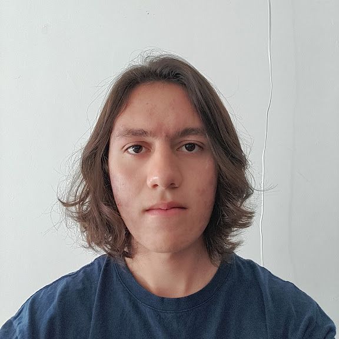

Luis Fernando Padilla López

Resumen
Educación
2017 - 2020 | Bachillerato Técnico en Sistemas, Adolfo López Mateos
2022 - Actualmente | Ingeniería en Computación, UDG Campus CUCEI
Experiencia
2019 - 2020 | Encargado de Almacén en una Cadena de Ferreterías
2020 - Actualmente | Encargado de Sistemas de esa misma cadena
Tel: 33 2199 5177/p>
Email: luis.padilla7812@alumnos.udg.mx
Dirección: Guadalajara, Jalisco
Lenguajes
Español: Nativo
Ingles:
Certificado con C2 en el 2020
Actualmente:
Hablado: |||||||| |50%
Lectura: ||||||||||||| |90%
Escritura: ||||||||||||| |90%